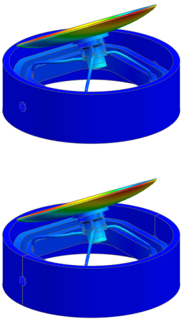

Examine additional modes
Select all plotted post views so you can easily navigate between mode shapes.
 Post Processing Navigator
Post Processing Navigator
-
 Post View 2
Post View 2 -
Shift
+
Post View 7 -
Ctrl
+
Post View 8All post views are now selected.
 Next Mode/Iteration (Post Processing group)
Next Mode/Iteration (Post Processing group)
|
Note |
The results data is loaded for each of the components that make up the solution results. |

Use the Next Mode/Iteration  command to view additional modes.
command to view additional modes.